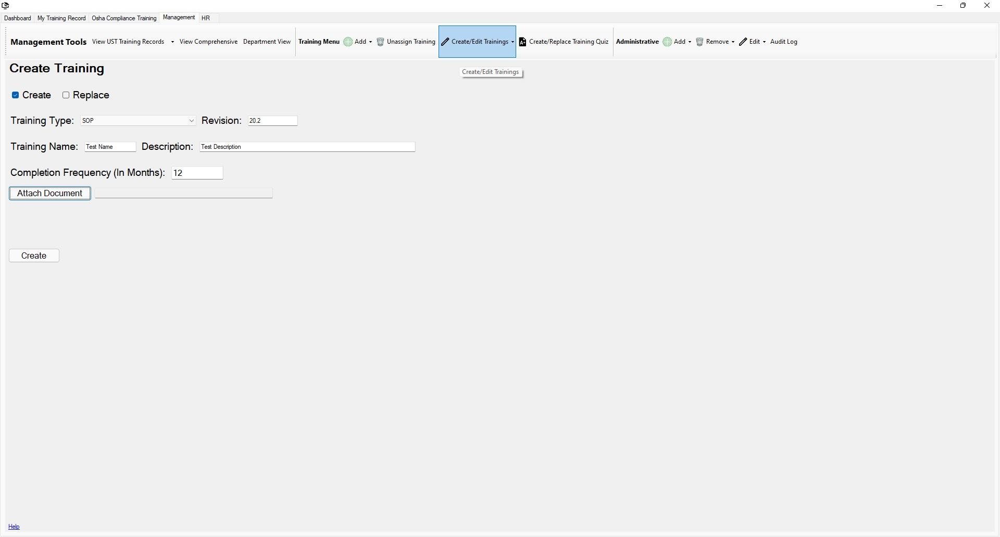

Return to Main Menu
Create a Training
The Create Training page can be accessed by pressing the "Create/Edit Trainings" button in the toolbar of the management tab.
On this page, you can create a training or replace a current training.

Instructions:
-
Navigate to the Create Training page.
-
Check the box next to "Create".
-
Select a training type. Currently the only supported types are SOP, NEW HIRE, and Department specific,
but the addition of custom training types is coming in the new future.
-
Enter a name for the training in the "Training Name" field.
-
Enter a description for the training in the "Description" field.
-
Enter the revision number of the training in the "Revision" field.
Note: The revision is stored as a number. This means that the revision "20.1" will be the same as "20.10".
Be careful while deciding how to format revisions.
-
Enter the completion frequency in the "Completion frequency field". The completion frequency specifies how often the training must be completed.
If the completion frequency is set to 12 months, then the training must be completed once per year (every 12 months).
-
Attach a document or video (any filetype that can be stored in EFile Cabinet can be used).
Verify that your filetype can be stored in and opened from EFile before using it. (Most filetypes are okay)
It is a good practice to only use filetypes that most people can open on their computers. If it will require an obscure application
to view the filetype, reconsider how you choose to store the training.
-
Press the "Create" button.